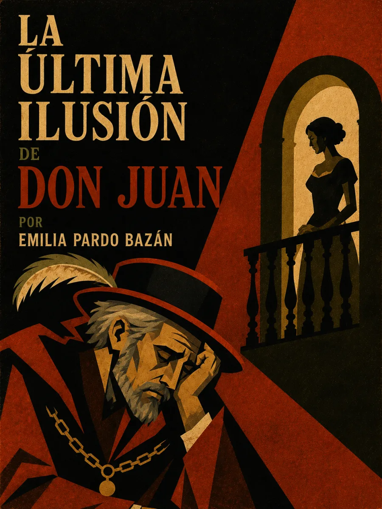

Escucha ahora
La devoción que cree eterna
Don Juan encuentra en las cartas de su prima Estrella un refugio afectivo que cree ajeno a sus aventuras. Durante años conserva esa imagen ideal sin volver a verla. El anuncio de que ella va a casarse rompe la ilusión de una entrega incondicional. Pardo Bazán desplaza así el conflicto hacia el corazón del seductor: aquello que él llama amor exige que otra persona permanezca inmóvil para sostener su sueño.
Publicado en El Imparcial el 18 de diciembre de 1893; recogido en Cuentos de amor. Edición de consulta · Biblioteca Virtual Miguel de Cervantes.
Lectura
La última ilusión de Don Juan · Relato completo
Reseñas

Bueno